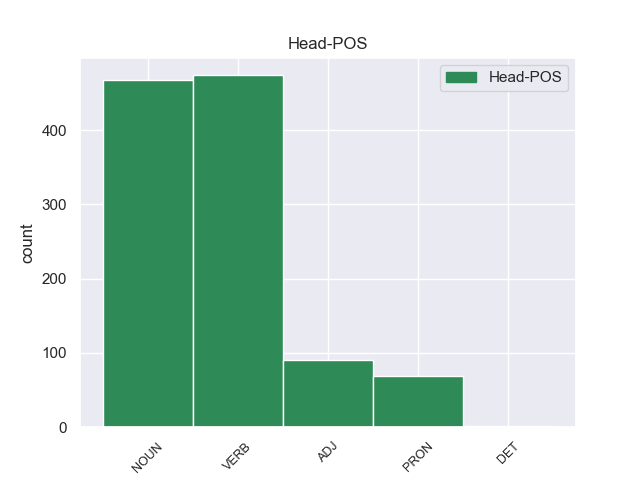
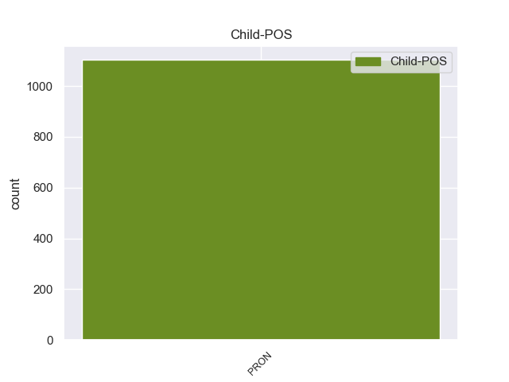

Distribution of features within this leaf



Agreement Rules sorted by frequency.
- When the dependent token is the nominal subject(nsubj) of the head token, and the dependent token is PRON.
1 Il _ _ _ _ 0 _ _ _
2 titolo _ _ _ _ 0 _ _ _
3 di _ _ _ _ 0 _ _ _
4 la _ _ _ _ 0 _ _ _
5 canzone _ _ _ _ 0 _ _ _
6 che _ _ _ _ 0 _ _ _
7 Luciano _ _ _ _ 0 _ _ _
8 Ligabue _ _ _ _ 0 _ _ _
9 ha _ _ _ _ 0 _ _ _
10 composto _ _ _ _ 0 _ _ _
11 per _ _ _ _ 0 _ _ _
12 il _ _ _ _ 0 _ _ _
13 film _ _ _ _ 0 _ _ _
14 Da _ _ _ _ 0 _ _ _
15 zero _ _ _ _ 0 _ _ _
16 a _ _ _ _ 0 _ _ _
17 dieci _ _ _ _ 0 _ _ _
18 è _ _ _ _ 0 _ _ _
19 : _ _ _ _ 0 _ _ _
20 Questa questa PRON PD Gender=Fem|Number=Sing|PronType=Dem 24 nsubj 24:nsubj _
21 è _ _ _ _ 0 _ _ _
22 la _ _ _ _ 0 _ _ _
23 mia _ _ _ _ 0 _ _ _
24 vita vita NOUN S Gender=Fem|Number=Sing 0 _ _ _
25 . _ _ _ _ 0 _ _ _
1 Perciò _ _ _ _ 0 _ _ _
2 , _ _ _ _ 0 _ _ _
3 tutti _ _ _ _ 0 _ _ _
4 i _ _ _ _ 0 _ _ _
5 Paesi paese NOUN S Gender=Masc|Number=Plur 0 _ _ _
6 di _ _ _ _ 0 _ _ _
7 il _ _ _ _ 0 _ _ _
8 mondo _ _ _ _ 0 _ _ _
9 , _ _ _ _ 0 _ _ _
10 specialmente _ _ _ _ 0 _ _ _
11 quelli quello PRON PD Gender=Masc|Number=Plur|PronType=Dem 5 nmod 5:nmod _
12 più _ _ _ _ 0 _ _ _
13 ricchi _ _ _ _ 0 _ _ _
14 , _ _ _ _ 0 _ _ _
15 devono _ _ _ _ 0 _ _ _
16 impegnar _ _ _ _ 0 _ _ _
17 si _ _ _ _ 0 _ _ _
18 di _ _ _ _ 0 _ _ _
19 più _ _ _ _ 0 _ _ _
20 per _ _ _ _ 0 _ _ _
21 migliorare _ _ _ _ 0 _ _ _
22 le _ _ _ _ 0 _ _ _
23 condizioni _ _ _ _ 0 _ _ _
24 di _ _ _ _ 0 _ _ _
25 vita _ _ _ _ 0 _ _ _
26 di _ _ _ _ 0 _ _ _
27 tutti _ _ _ _ 0 _ _ _
28 i _ _ _ _ 0 _ _ _
29 bambini _ _ _ _ 0 _ _ _
30 . _ _ _ _ 0 _ _ _
1 Le _ _ _ _ 0 _ _ _
2 canzoni _ _ _ _ 0 _ _ _
3 di _ _ _ _ 0 _ _ _
4 il _ _ _ _ 0 _ _ _
5 nuovo _ _ _ _ 0 _ _ _
6 disco _ _ _ _ 0 _ _ _
7 di _ _ _ _ 0 _ _ _
8 Mina _ _ _ _ 0 _ _ _
9 , _ _ _ _ 0 _ _ _
10 Bula _ _ _ _ 0 _ _ _
11 Bula _ _ _ _ 0 _ _ _
12 sono _ _ _ _ 0 _ _ _
13 tutte tutto PRON PI Gender=Fem|Number=Plur|PronType=Ind 14 obl 14:obl _
14 nuove nuovo ADJ A Gender=Fem|Number=Plur 0 _ _ _
15 . _ _ _ _ 0 _ _ _
1 Prima _ _ _ _ 0 _ _ _
2 , _ _ _ _ 0 _ _ _
3 le _ _ _ _ 0 _ _ _
4 squadre _ _ _ _ 0 _ _ _
5 con _ _ _ _ 0 _ _ _
6 più _ _ _ _ 0 _ _ _
7 soldi _ _ _ _ 0 _ _ _
8 costruivano _ _ _ _ 0 _ _ _
9 e _ _ _ _ 0 _ _ _
10 usavano _ _ _ _ 0 _ _ _
11 due _ _ _ _ 0 _ _ _
12 motori _ _ _ _ 0 _ _ _
13 , _ _ _ _ 0 _ _ _
14 uno uno PRON PI Gender=Masc|Number=Sing|PronType=Ind 0 _ _ _
15 per _ _ _ _ 0 _ _ _
16 il _ _ _ _ 0 _ _ _
17 giro _ _ _ _ 0 _ _ _
18 di _ _ _ _ 0 _ _ _
19 qualifica _ _ _ _ 0 _ _ _
20 e _ _ _ _ 0 _ _ _
21 uno uno PRON PI Gender=Masc|Number=Sing|PronType=Ind 14 conj 12:appos|14:conj:e _
22 per _ _ _ _ 0 _ _ _
23 la _ _ _ _ 0 _ _ _
24 gara _ _ _ _ 0 _ _ _
25 . _ _ _ _ 0 _ _ _
1 Poi _ _ _ _ 0 _ _ _
2 le le PRON PC Clitic=Yes|Gender=Fem|Person=3|PronType=Prs 4 obj 4:obj|6:obj _
3 hanno _ _ _ _ 0 _ _ _
4 arrestate arrestare VERB V Gender=Fem|Number=Plur|Tense=Past|VerbForm=Part 0 _ _ _
5 e _ _ _ _ 0 _ _ _
6 rinchiuse _ _ _ _ 0 _ _ _
7 in _ _ _ _ 0 _ _ _
8 i _ _ _ _ 0 _ _ _
9 campi _ _ _ _ 0 _ _ _
10 di _ _ _ _ 0 _ _ _
11 concentramento _ _ _ _ 0 _ _ _
12 . _ _ _ _ 0 _ _ _
1 Benvenuti _ _ _ _ 0 _ _ _
2 quindi _ _ _ _ 0 _ _ _
3 in _ _ _ _ 0 _ _ _
4 l' _ _ _ _ 0 _ _ _
5 economia _ _ _ _ 0 _ _ _
6 virtuale _ _ _ _ 0 _ _ _
7 di _ _ _ _ 0 _ _ _
8 le _ _ _ _ 0 _ _ _
9 fabbriche _ _ _ _ 0 _ _ _
10 che _ _ _ _ 0 _ _ _
11 sfruttano _ _ _ _ 0 _ _ _
12 i _ _ _ _ 0 _ _ _
13 lavoratori _ _ _ _ 0 _ _ _
14 , _ _ _ _ 0 _ _ _
15 a _ _ _ _ 0 _ _ _
16 l' _ _ _ _ 0 _ _ _
17 interno _ _ _ _ 0 _ _ _
18 di _ _ _ _ 0 _ _ _
19 la _ _ _ _ 0 _ _ _
20 quale _ _ _ _ 0 _ _ _
21 molti molto PRON PI Gender=Masc|Number=Plur|PronType=Ind 25 nsubj:pass 25:nsubj:pass _
22 di _ _ _ _ 0 _ _ _
23 noi _ _ _ _ 0 _ _ _
24 sono _ _ _ _ 0 _ _ _
25 inchiodati inchiodare VERB V Gender=Masc|Number=Plur|Tense=Past|VerbForm=Part 0 _ _ _
26 a _ _ _ _ 0 _ _ _
27 le _ _ _ _ 0 _ _ _
28 scrivanie _ _ _ _ 0 _ _ _
29 e _ _ _ _ 0 _ _ _
30 a _ _ _ _ 0 _ _ _
31 gli _ _ _ _ 0 _ _ _
32 schermi _ _ _ _ 0 _ _ _
33 ; _ _ _ _ 0 _ _ _
1 ciò _ _ _ _ 0 _ _ _
2 gli gli PRON PC Clitic=Yes|Gender=Masc|Number=Sing|Person=3|PronType=Prs 4 iobj 4:iobj _
3 ha _ _ _ _ 0 _ _ _
4 conferito conferire VERB V Gender=Masc|Number=Sing|Tense=Past|VerbForm=Part 0 _ _ _
5 la _ _ _ _ 0 _ _ _
6 reputazione _ _ _ _ 0 _ _ _
7 di _ _ _ _ 0 _ _ _
8 precursore _ _ _ _ 0 _ _ _
9 naturalista _ _ _ _ 0 _ _ _
10 . _ _ _ _ 0 _ _ _
1 Sopravvivono _ _ _ _ 0 _ _ _
2 pochi _ _ _ _ 0 _ _ _
3 documenti _ _ _ _ 0 _ _ _
4 su _ _ _ _ 0 _ _ _
5 la _ _ _ _ 0 _ _ _
6 vita _ _ _ _ 0 _ _ _
7 privata _ _ _ _ 0 _ _ _
8 di _ _ _ _ 0 _ _ _
9 Shakespeare _ _ _ _ 0 _ _ _
10 e _ _ _ _ 0 _ _ _
11 c' _ _ _ _ 0 _ _ _
12 è _ _ _ _ 0 _ _ _
13 stata _ _ _ _ 0 _ _ _
14 una _ _ _ _ 0 _ _ _
15 considerevole _ _ _ _ 0 _ _ _
16 speculazione _ _ _ _ 0 _ _ _
17 su _ _ _ _ 0 _ _ _
18 argomenti _ _ _ _ 0 _ _ _
19 quali _ _ _ _ 0 _ _ _
20 il _ _ _ _ 0 _ _ _
21 suo _ _ _ _ 0 _ _ _
22 aspetto _ _ _ _ 0 _ _ _
23 fisico _ _ _ _ 0 _ _ _
24 , _ _ _ _ 0 _ _ _
25 la _ _ _ _ 0 _ _ _
26 sua _ _ _ _ 0 _ _ _
27 sessualità _ _ _ _ 0 _ _ _
28 , _ _ _ _ 0 _ _ _
29 il _ _ _ _ 0 _ _ _
30 suo _ _ _ _ 0 _ _ _
31 credo _ _ _ _ 0 _ _ _
32 religioso _ _ _ _ 0 _ _ _
33 e _ _ _ _ 0 _ _ _
34 se _ _ _ _ 0 _ _ _
35 i _ _ _ _ 0 _ _ _
36 lavori _ _ _ _ 0 _ _ _
37 a _ _ _ _ 0 _ _ _
38 lui _ _ _ _ 0 _ _ _
39 attribuiti _ _ _ _ 0 _ _ _
40 fossero _ _ _ _ 0 _ _ _
41 scritti scrivere VERB V Gender=Masc|Number=Plur|Tense=Past|VerbForm=Part 0 _ _ _
42 da _ _ _ _ 0 _ _ _
43 altri altro PRON PI Gender=Masc|Number=Plur|PronType=Ind 41 obl:agent 41:obl:agent:da SpaceAfter=No
44 . _ _ _ _ 0 _ _ _
1 Prima _ _ _ _ 0 _ _ _
2 , _ _ _ _ 0 _ _ _
3 le _ _ _ _ 0 _ _ _
4 squadre _ _ _ _ 0 _ _ _
5 con _ _ _ _ 0 _ _ _
6 più _ _ _ _ 0 _ _ _
7 soldi _ _ _ _ 0 _ _ _
8 costruivano _ _ _ _ 0 _ _ _
9 e _ _ _ _ 0 _ _ _
10 usavano _ _ _ _ 0 _ _ _
11 due _ _ _ _ 0 _ _ _
12 motori motore NOUN S Gender=Masc|Number=Plur 0 _ _ _
13 , _ _ _ _ 0 _ _ _
14 uno uno PRON PI Gender=Masc|Number=Sing|PronType=Ind 12 appos 12:appos _
15 per _ _ _ _ 0 _ _ _
16 il _ _ _ _ 0 _ _ _
17 giro _ _ _ _ 0 _ _ _
18 di _ _ _ _ 0 _ _ _
19 qualifica _ _ _ _ 0 _ _ _
20 e _ _ _ _ 0 _ _ _
21 uno _ _ _ _ 0 _ _ _
22 per _ _ _ _ 0 _ _ _
23 la _ _ _ _ 0 _ _ _
24 gara _ _ _ _ 0 _ _ _
25 . _ _ _ _ 0 _ _ _
1 In _ _ _ _ 0 _ _ _
2 gli _ _ _ _ 0 _ _ _
3 anni _ _ _ _ 0 _ _ _
4 Ottanta _ _ _ _ 0 _ _ _
5 è _ _ _ _ 0 _ _ _
6 diventato diventare VERB V Gender=Masc|Number=Sing|Tense=Past|VerbForm=Part 0 _ _ _
7 uno uno PRON PI Gender=Masc|Number=Sing|PronType=Ind 6 xcomp 6:xcomp _
8 di _ _ _ _ 0 _ _ _
9 i _ _ _ _ 0 _ _ _
10 generi _ _ _ _ 0 _ _ _
11 di _ _ _ _ 0 _ _ _
12 musica _ _ _ _ 0 _ _ _
13 preferita _ _ _ _ 0 _ _ _
14 da _ _ _ _ 0 _ _ _
15 i _ _ _ _ 0 _ _ _
16 giovani _ _ _ _ 0 _ _ _
17 . _ _ _ _ 0 _ _ _
1 D' _ _ _ _ 0 _ _ _
2 altro _ _ _ _ 0 _ _ _
3 canto _ _ _ _ 0 _ _ _
4 , _ _ _ _ 0 _ _ _
5 se _ _ _ _ 0 _ _ _
6 è _ _ _ _ 0 _ _ _
7 vero _ _ _ _ 0 _ _ _
8 , _ _ _ _ 0 _ _ _
9 come _ _ _ _ 0 _ _ _
10 ha _ _ _ _ 0 _ _ _
11 detto _ _ _ _ 0 _ _ _
12 a _ _ _ _ 0 _ _ _
13 l' _ _ _ _ 0 _ _ _
14 Ansa _ _ _ _ 0 _ _ _
15 il _ _ _ _ 0 _ _ _
16 segretario _ _ _ _ 0 _ _ _
17 di _ _ _ _ 0 _ _ _
18 il _ _ _ _ 0 _ _ _
19 vescovo _ _ _ _ 0 _ _ _
20 di _ _ _ _ 0 _ _ _
21 Goma _ _ _ _ 0 _ _ _
22 , _ _ _ _ 0 _ _ _
23 Faustino _ _ _ _ 0 _ _ _
24 Angabu _ _ _ _ 0 _ _ _
25 , _ _ _ _ 0 _ _ _
26 che _ _ _ _ 0 _ _ _
27 la _ _ _ _ 0 _ _ _
28 strada _ _ _ _ 0 _ _ _
29 percorsa _ _ _ _ 0 _ _ _
30 da _ _ _ _ 0 _ _ _
31 il _ _ _ _ 0 _ _ _
32 gruppo _ _ _ _ 0 _ _ _
33 di _ _ _ _ 0 _ _ _
34 italiani _ _ _ _ 0 _ _ _
35 massacrati _ _ _ _ 0 _ _ _
36 sabato _ _ _ _ 0 _ _ _
37 era _ _ _ _ 0 _ _ _
38 considerata _ _ _ _ 0 _ _ _
39 sicura _ _ _ _ 0 _ _ _
40 , _ _ _ _ 0 _ _ _
41 è _ _ _ _ 0 _ _ _
42 pur _ _ _ _ 0 _ _ _
43 vero vero ADJ A Gender=Masc|Number=Sing 0 _ _ _
44 che _ _ _ _ 0 _ _ _
45 lo _ _ _ _ 0 _ _ _
46 Zaire _ _ _ _ 0 _ _ _
47 è _ _ _ _ 0 _ _ _
48 uno uno PRON PI Gender=Masc|Number=Sing|PronType=Ind 43 ccomp 43:ccomp _
49 di _ _ _ _ 0 _ _ _
50 i _ _ _ _ 0 _ _ _
51 Paesi _ _ _ _ 0 _ _ _
52 più _ _ _ _ 0 _ _ _
53 pericolosi _ _ _ _ 0 _ _ _
54 di _ _ _ _ 0 _ _ _
55 tutta _ _ _ _ 0 _ _ _
56 l' _ _ _ _ 0 _ _ _
57 Africa _ _ _ _ 0 _ _ _
58 . _ _ _ _ 0 _ _ _
1 È _ _ _ _ 0 _ _ _
2 stato _ _ _ _ 0 _ _ _
3 facile _ _ _ _ 0 _ _ _
4 ricostruire _ _ _ _ 0 _ _ _
5 le _ _ _ _ 0 _ _ _
6 telefonate _ _ _ _ 0 _ _ _
7 in _ _ _ _ 0 _ _ _
8 partenza _ _ _ _ 0 _ _ _
9 da _ _ _ _ 0 _ _ _
10 il _ _ _ _ 0 _ _ _
11 " _ _ _ _ 0 _ _ _
12 portatile _ _ _ _ 0 _ _ _
13 " _ _ _ _ 0 _ _ _
14 ed _ _ _ _ 0 _ _ _
15 è _ _ _ _ 0 _ _ _
16 subito _ _ _ _ 0 _ _ _
17 stato _ _ _ _ 0 _ _ _
18 chiaro chiaro ADJ A Gender=Masc|Number=Sing 0 _ _ _
19 che _ _ _ _ 0 _ _ _
20 il _ _ _ _ 0 _ _ _
21 carabiniere _ _ _ _ 0 _ _ _
22 addetto _ _ _ _ 0 _ _ _
23 a _ _ _ _ 0 _ _ _
24 la _ _ _ _ 0 _ _ _
25 sicurezza _ _ _ _ 0 _ _ _
26 di _ _ _ _ 0 _ _ _
27 il _ _ _ _ 0 _ _ _
28 presidente _ _ _ _ 0 _ _ _
29 era _ _ _ _ 0 _ _ _
30 anche _ _ _ _ 0 _ _ _
31 colui colui PRON PD Gender=Masc|Number=Sing|PronType=Dem 18 csubj 18:csubj|36:nsubj _
32 che _ _ _ _ 0 _ _ _
33 aveva _ _ _ _ 0 _ _ _
34 a _ _ _ _ 0 _ _ _
35 lungo _ _ _ _ 0 _ _ _
36 inveito _ _ _ _ 0 _ _ _
37 contro _ _ _ _ 0 _ _ _
38 lo _ _ _ _ 0 _ _ _
39 stesso _ _ _ _ 0 _ _ _
40 Scalfaro _ _ _ _ 0 _ _ _
41 e _ _ _ _ 0 _ _ _
42 la _ _ _ _ 0 _ _ _
43 figlia _ _ _ _ 0 _ _ _
44 . _ _ _ _ 0 _ _ _
1 Uno uno PRON PI Gender=Masc|Number=Sing|PronType=Ind 4 dislocated 4:dislocated _
2 l' _ _ _ _ 0 _ _ _
3 ho _ _ _ _ 0 _ _ _
4 messo mettere VERB V Gender=Masc|Number=Sing|Tense=Past|VerbForm=Part 0 _ _ _
5 giù _ _ _ _ 0 _ _ _
6 , _ _ _ _ 0 _ _ _
7 ma _ _ _ _ 0 _ _ _
8 l' _ _ _ _ 0 _ _ _
9 altro _ _ _ _ 0 _ _ _
10 ha _ _ _ _ 0 _ _ _
11 tirato _ _ _ _ 0 _ _ _
12 fuori _ _ _ _ 0 _ _ _
13 la _ _ _ _ 0 _ _ _
14 pistola _ _ _ _ 0 _ _ _
15 . _ _ _ _ 0 _ _ _
1 Di _ _ _ _ 0 _ _ _
2 chi _ _ _ _ 0 _ _ _
3 ha _ _ _ _ 0 _ _ _
4 l' _ _ _ _ 0 _ _ _
5 orgoglio orgoglio NOUN S Gender=Masc|Number=Sing 0 _ _ _
6 di _ _ _ _ 0 _ _ _
7 essere _ _ _ _ 0 _ _ _
8 quello quello PRON PD Gender=Masc|Number=Sing|PronType=Dem 5 acl 5:acl:di|10:nsubj _
9 che _ _ _ _ 0 _ _ _
10 è _ _ _ _ 0 _ _ _
11 , _ _ _ _ 0 _ _ _
12 senza _ _ _ _ 0 _ _ _
13 finzioni _ _ _ _ 0 _ _ _
14 . _ _ _ _ 0 _ _ _
1 " _ _ _ _ 0 _ _ _
2 Quello quello PRON PD Gender=Masc|Number=Sing|PronType=Dem 18 dep 6:obj|18:dep _
3 che _ _ _ _ 0 _ _ _
4 Balzac _ _ _ _ 0 _ _ _
5 ha _ _ _ _ 0 _ _ _
6 iniziato _ _ _ _ 0 _ _ _
7 " _ _ _ _ 0 _ _ _
8 , _ _ _ _ 0 _ _ _
9 dice _ _ _ _ 0 _ _ _
10 Lehan _ _ _ _ 0 _ _ _
11 , _ _ _ _ 0 _ _ _
12 " _ _ _ _ 0 _ _ _
13 Flaubert _ _ _ _ 0 _ _ _
14 ha _ _ _ _ 0 _ _ _
15 aiutato _ _ _ _ 0 _ _ _
16 a _ _ _ _ 0 _ _ _
17 finir _ _ _ _ 0 _ _ _
18 lo lo PRON PC Clitic=Yes|Gender=Masc|Number=Sing|Person=3|PronType=Prs 0 _ _ _
19 . _ _ _ _ 0 _ _ _
Disagree Examples:
1 Rilevata _ _ _ _ 0 _ _ _
2 la _ _ _ _ 0 _ _ _
3 presenza presenza NOUN S Gender=Fem|Number=Sing 0 _ _ _
4 di _ _ _ _ 0 _ _ _
5 gas _ _ _ _ 0 _ _ _
6 in _ _ _ _ 0 _ _ _
7 uno uno PRON PI Gender=Masc|Number=Sing|PronType=Ind 3 nmod 3:nmod:in _
8 di _ _ _ _ 0 _ _ _
9 i _ _ _ _ 0 _ _ _
10 tubi _ _ _ _ 0 _ _ _
11 trasparenti _ _ _ _ 0 _ _ _
12 che _ _ _ _ 0 _ _ _
13 compongono _ _ _ _ 0 _ _ _
14 l' _ _ _ _ 0 _ _ _
15 opera _ _ _ _ 0 _ _ _
16 , _ _ _ _ 0 _ _ _
17 i _ _ _ _ 0 _ _ _
18 guardiani _ _ _ _ 0 _ _ _
19 hanno _ _ _ _ 0 _ _ _
20 fatto _ _ _ _ 0 _ _ _
21 scattare _ _ _ _ 0 _ _ _
22 uno _ _ _ _ 0 _ _ _
23 speciale _ _ _ _ 0 _ _ _
24 piano _ _ _ _ 0 _ _ _
25 d' _ _ _ _ 0 _ _ _
26 emergenza _ _ _ _ 0 _ _ _
27 e _ _ _ _ 0 _ _ _
28 per _ _ _ _ 0 _ _ _
29 45 _ _ _ _ 0 _ _ _
30 minuti _ _ _ _ 0 _ _ _
31 i _ _ _ _ 0 _ _ _
32 pompieri _ _ _ _ 0 _ _ _
33 hanno _ _ _ _ 0 _ _ _
34 isolato _ _ _ _ 0 _ _ _
35 la _ _ _ _ 0 _ _ _
36 sala _ _ _ _ 0 _ _ _
37 . _ _ _ _ 0 _ _ _
1 In _ _ _ _ 0 _ _ _
2 una uno PRON PI Gender=Fem|Number=Sing|PronType=Ind 15 obl 15:obl:in _
3 di _ _ _ _ 0 _ _ _
4 le _ _ _ _ 0 _ _ _
5 chiamate _ _ _ _ 0 _ _ _
6 giunte _ _ _ _ 0 _ _ _
7 a _ _ _ _ 0 _ _ _
8 il _ _ _ _ 0 _ _ _
9 " _ _ _ _ 0 _ _ _
10 113 _ _ _ _ 0 _ _ _
11 " _ _ _ _ 0 _ _ _
12 sarebbe _ _ _ _ 0 _ _ _
13 stato _ _ _ _ 0 _ _ _
14 anche _ _ _ _ 0 _ _ _
15 annunciato annunciare VERB V Gender=Masc|Number=Sing|Tense=Past|VerbForm=Part 0 _ _ _
16 lo _ _ _ _ 0 _ _ _
17 scoppio _ _ _ _ 0 _ _ _
18 di _ _ _ _ 0 _ _ _
19 una _ _ _ _ 0 _ _ _
20 bomba _ _ _ _ 0 _ _ _
21 . _ _ _ _ 0 _ _ _
1 La _ _ _ _ 0 _ _ _
2 tragedia _ _ _ _ 0 _ _ _
3 è _ _ _ _ 0 _ _ _
4 avvenuta _ _ _ _ 0 _ _ _
5 sabato _ _ _ _ 0 _ _ _
6 mattina _ _ _ _ 0 _ _ _
7 ( _ _ _ _ 0 _ _ _
8 ma _ _ _ _ 0 _ _ _
9 la _ _ _ _ 0 _ _ _
10 notizia _ _ _ _ 0 _ _ _
11 è _ _ _ _ 0 _ _ _
12 giunta _ _ _ _ 0 _ _ _
13 in _ _ _ _ 0 _ _ _
14 Italia _ _ _ _ 0 _ _ _
15 solo _ _ _ _ 0 _ _ _
16 ieri _ _ _ _ 0 _ _ _
17 ) _ _ _ _ 0 _ _ _
18 su _ _ _ _ 0 _ _ _
19 la _ _ _ _ 0 _ _ _
20 strada _ _ _ _ 0 _ _ _
21 che _ _ _ _ 0 _ _ _
22 porta _ _ _ _ 0 _ _ _
23 a _ _ _ _ 0 _ _ _
24 il _ _ _ _ 0 _ _ _
25 parco parco NOUN S Gender=Masc|Number=Sing 0 _ _ _
26 di _ _ _ _ 0 _ _ _
27 Virunga _ _ _ _ 0 _ _ _
28 - _ _ _ _ 0 _ _ _
29 una uno PRON PI Gender=Fem|Number=Sing|PronType=Ind 25 appos 25:appos _
30 di _ _ _ _ 0 _ _ _
31 le _ _ _ _ 0 _ _ _
32 più _ _ _ _ 0 _ _ _
33 belle _ _ _ _ 0 _ _ _
34 e _ _ _ _ 0 _ _ _
35 antiche _ _ _ _ 0 _ _ _
36 oasi _ _ _ _ 0 _ _ _
37 naturali _ _ _ _ 0 _ _ _
38 di _ _ _ _ 0 _ _ _
39 il _ _ _ _ 0 _ _ _
40 mondo _ _ _ _ 0 _ _ _
41 - _ _ _ _ 0 _ _ _
42 creato _ _ _ _ 0 _ _ _
43 in _ _ _ _ 0 _ _ _
44 il _ _ _ _ 0 _ _ _
45 1925 _ _ _ _ 0 _ _ _
46 . _ _ _ _ 0 _ _ _
1 Ebbene _ _ _ _ 0 _ _ _
2 , _ _ _ _ 0 _ _ _
3 in _ _ _ _ 0 _ _ _
4 questi _ _ _ _ 0 _ _ _
5 casi _ _ _ _ 0 _ _ _
6 , _ _ _ _ 0 _ _ _
7 i _ _ _ _ 0 _ _ _
8 colleghi _ _ _ _ 0 _ _ _
9 dapprima _ _ _ _ 0 _ _ _
10 sghignazzano _ _ _ _ 0 _ _ _
11 poi _ _ _ _ 0 _ _ _
12 , _ _ _ _ 0 _ _ _
13 quando _ _ _ _ 0 _ _ _
14 la _ _ _ _ 0 _ _ _
15 scoperta _ _ _ _ 0 _ _ _
16 è _ _ _ _ 0 _ _ _
17 riconosciuta riconoscere VERB V Gender=Fem|Number=Sing|Tense=Past|VerbForm=Part 0 _ _ _
18 da _ _ _ _ 0 _ _ _
19 tutti tutto PRON PI Gender=Masc|Number=Plur|PronType=Ind 17 obl:agent 17:obl:agent:da SpaceAfter=No
20 , _ _ _ _ 0 _ _ _
21 si _ _ _ _ 0 _ _ _
22 convincono _ _ _ _ 0 _ _ _
23 che _ _ _ _ 0 _ _ _
24 avrebbero _ _ _ _ 0 _ _ _
25 benissimo _ _ _ _ 0 _ _ _
26 potuto _ _ _ _ 0 _ _ _
27 far _ _ _ _ 0 _ _ _
28 la _ _ _ _ 0 _ _ _
29 loro _ _ _ _ 0 _ _ _
30 . _ _ _ _ 0 _ _ _
1 Ma _ _ _ _ 0 _ _ _
2 in _ _ _ _ 0 _ _ _
3 quel _ _ _ _ 0 _ _ _
4 singolo _ _ _ _ 0 _ _ _
5 caso _ _ _ _ 0 _ _ _
6 , _ _ _ _ 0 _ _ _
7 per _ _ _ _ 0 _ _ _
8 quella _ _ _ _ 0 _ _ _
9 singola _ _ _ _ 0 _ _ _
10 famiglia _ _ _ _ 0 _ _ _
11 , _ _ _ _ 0 _ _ _
12 città _ _ _ _ 0 _ _ _
13 , _ _ _ _ 0 _ _ _
14 nazione _ _ _ _ 0 _ _ _
15 , _ _ _ _ 0 _ _ _
16 che _ _ _ _ 0 _ _ _
17 disastri _ _ _ _ 0 _ _ _
18 , _ _ _ _ 0 _ _ _
19 che _ _ _ _ 0 _ _ _
20 catastrofe _ _ _ _ 0 _ _ _
21 può _ _ _ _ 0 _ _ _
22 provocare _ _ _ _ 0 _ _ _
23 la _ _ _ _ 0 _ _ _
24 morte morte NOUN S Gender=Fem|Number=Sing 0 _ _ _
25 di _ _ _ _ 0 _ _ _
26 uno uno PRON PI Gender=Masc|Number=Sing|PronType=Ind 24 nmod 24:nmod:di _
27 solo _ _ _ _ 0 _ _ _
28 ! _ _ _ _ 0 _ _ _